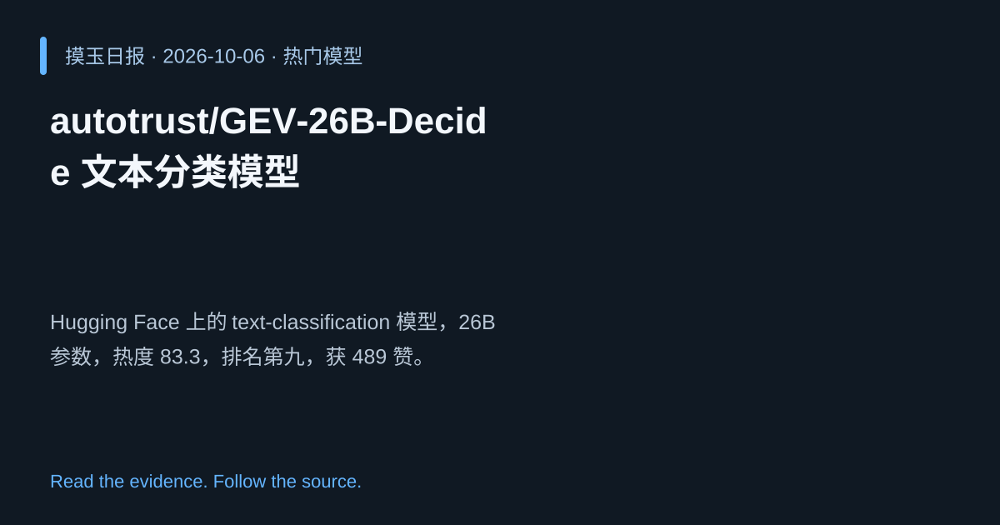

2026-10-06 · Asia/Shanghai · 热门模型 · #9
autotrust/GEV‑26B‑Decide 文本分类模型
autotrust/GEV-26B-Decide
Hugging Face 上的 text‑classification 模型，26B 参数，热度 83.3，排名第九，获 489 赞。
为什么值得关注
大模型在分类任务中提供更细粒度表现，展示高容量模型的应用潜力。
- 26B 参数提升分类精度
- 热度 83.3/100，社区认可度 489 赞
- 适用于多语言分类场景

热度 83.5 / 100；排名与评分保留该期记录。